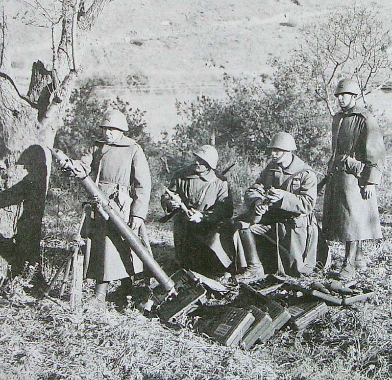

The Quartermaster Section
Home
About
Contact
Infantry Weapons
Pistola 34
Moschetto 38A
Carcano 91
Carcano 38
Mitragliatrice 30
Mortaio 35
Fucile 35(P)
Fucile Anticarro da 20mm
Bomba a mano Breda Mod.35
Infantry Support Weapons
Mitragliatrice 35
Mitragliatrice 37
Mitragliatrice 14
Mortaio 35
Lanciaflamme 35
ITALIAN INFANTRY WEAPONS
TODO: Weapons blurb
Pistola Modello 34
Year: 1934.
Weapon Type: Service Pistol.
Numbers Produced: 1.080.000.
Calibre: 9mm (9x17).
Barrel Length: 94mm.
Overall Length: 152mm.
Combat Weight: 0.75g.
Operation: Blowback / Semi-Automatic.
Sights: Front Blade & Rear Notch.
Cartridge Weight: 11.9g.
Muzzle Velocity: 245 m/s.
Magazine: 7 Rounds.
Practical Rate of Fire: 14 r.p.m.
Maximum Rate of Fire: 40 r.p.m.
Effective Range: 40 m.
Maximum Range: 200m.
Notes: .
Moschetto Automatico Modello 38A
Year: 1938.
Weapon Type: Sub-Machine Gun.
Numbers Produced: .
Calibre: 9mm (9x19).
Barrel Length: 300mm.
Overall Length: 947mm.
Combat Weight: 5 kg.
Operation: Blowback.
Sights: Front Blade & Rear Flip.
Cartridge Weight: 11.9g.
Muzzle Velocity: 429 m/s.
Feed: 10, 20, 30 or 40 Box Magazine.
Practical Rate of Fire: 100 r.p.m.
Maximum Rate of Fire: 500 r.p.m.
Effective Range: 150m.
Maximum Range: 220m.
Notes: .
Carcano Modello 91
Year: 1891.
Weapon Type: Infantry Rifle
Numbers Produced: 3.000.000
Calibre: 6.5mm (6.5x52).
Barrel Length: 780mm.
Overall Length: 1.285mm.
Combat Weight: 4.07 kg.
Operation: Bolt Action.
Sights: Front Blade & Adjustable Rear.
Cartridge Weight: 22.4g.
Muzzle Velocity: 700 m/s.
Feed: 6 Round Internal Magazine.
Practical Rate of Fire: 15 r.p.m.
Maximum Rate of Fire: rpm.
Effective Range: 500m.
Maximum Range: 1.200m.
Bayonet: .
Notes: .
Carcano Modello 38
Year: 1937.
Weapon Type: Infantry Rifle
Numbers Produced: .
Calibre: 7.35mm (7.35x51).
Barrel Length: 560mm.
Overall Length: 1.200mm.
Combat Weight: 3.68 kg.
Operation: Bolt Action.
Sights: Front Blade & Fixed Rear.
Cartridge Weight: g.
Muzzle Velocity: 757 m/s.
Feed: 6 Round Internal Magazine.
Practical Rate of Fire: 6 r.p.m.
Maximum Rate of Fire: 15 rpm.
Effective Range: 200m.
Maximum Range: 2000m.
Bayonet: .
Notes: .
Mitragliatrice Modello 30
Year: 1930.
Weapon Type: Light Machine Gun.
Numbers Produced: 30.000.
Calibre: 6.5mm (6.5x52).
Barrel Length: 450mm.
Overall Length: 1.230mm.
Combat Weight: 10.6 kg.
Operation: Blowback.
Mount: Bi-Pod.
Sights: Front Blade & Adjustable Rear.
Cartridge Weight: 22.4g.
Muzzle Velocity: 630 m/s.
Feed: 20 Round Strips.
Practical Rate of Fire: 180 r.p.m.
Maximum Rate of Fire: 475 rpm.
Effective Range: 800m.
Maximum Range: 300m.
Notes: .
Mortaio d’assalto Modello 35
Year: 1935.
Weapon Type: Light Mortar.
Numbers Produced: .
Crew: 2 (Gunner & Loader).
Calibre: 45mm.
Elevation: +10° to +90°.
Traverse: 20°.
Barrel Length: 725mm.
Combat Weight: 15.5 kg.
Shell Weight: 0.46 kg.
Muzzle Velocity: 83 m/s.
Practical Rate of Fire: 10 r.p.m.
Maximum Rate of Fire: 30 r.p.m.
Minimum Range: 100m.
Maximum Range: 530m.
Notes: .
Fucile Controcarro 35(P)
Year: 1940.
Weapon Type: Light Anti-Tank Rifle.
Total: 800.
Crew: 2 (Gunner & Loader).
Calibre: 7.92mm (7.92x107DS).
Barrel Length: 1.200mm.
Overall Length: 1.760mm.
Combat Weight: 10 kg.
Operation: Bolt-Action.
Mount: Bi-Pod.
Sights: Front Blade & Fixed Rear.
Cartridge Weight: 64.25g.
Muzzle Velocity: 1.275 m/s.
Feed: 4 Round Box Magazine.
Practical Rate of Fire: 8 r.p.m.
Maximum Rate of Fire: 10 r.p.m.
Armour Penetration: 33mm @ 500m @ 30°.
Effective Range: 300m.
Maximum Range: 1.500m.
Notes: .
Fucile Anticarro da 20mm.
Year: 1940.
Weapon Type: Heavy Anti-Tank Rifle.
Total: 305.
Crew: 2.
Calibre: 20mm (20x105B).
Barrel Length: 1.420mm.
Overall Length: 2.16m.
Combat Weight: 54.70 kg
Operation: Semi-Automatic.
Mount: Bi-Pod.
Sights: Front & Rear.
Cartridge Weight: 0.337 kg (AP).
Muzzle Velocity: 832 m/s.
Feed: 10 Round Magazine.
Practical Rate of Fire: 10 r.p.m.
Maximum Rate of Fire: 20 r.p.m.
Armour Penetration: 11mm @ 500m @ 30°.
Effective Range: m.
Maximum Range: m.
Traction: Two Wheeled Mount (30 kg).
Notes: .
Bomba a mano Breda Mod.35
Year: 1935.
Type: Offensive Grenade.
Weight: 200g.
Length: 96mm.
Diameter: 55mm.
Explosive Filler: 63g.
Blast Radius: 15m.
Range: 20-25m By Hand.
ITALIAN INFANTRY SUPPORT WEAPONS
TODO: Support weapons blurb
Mitragliatrice Modello 35
Year: 1935.
Weapon Type: Medium Machine Gun.
Numbers Produced: .
Crew: 5.
Calibre: 8mm (8x59).
Barrel Length: 550mm.
Overall Length: 1.265mm.
Combat Weight:
Gun: 17.2 kg.
Mount: 27 kg.
Total Weight: 44.2 kg.
Mount: Tri-Pod.
Operation: Delayed Blowback.
Cooling System: Air.
Sights: Front Blade & Adjustable Rear Leaf.
Cartridge Weight: kg.
Muzzle Velocity: 750 m/s.
Feed: 50 Round Belt.
Practical Rate of Fire: 450 r.p.m.
Maximum Rate of Fire: 650 r.p.m.
Effective Range: 1000m.
Maximum Range: 5.200m.
Notes: .
Mitragliatrice Modello 37
Year: 1937.
Weapon Type: Medium Machine Gun.
Numbers Produced: .
Crew: 5.
Calibre: 8mm (8x59RB).
Barrel Length: 780mm.
Overall Length: 1.270mm.
Combat Weight:
Gun: 19.4 kg.
Mount: 18.8 kg.
Total Weight: 38.2 kg.
Mount: Tri-Pod.
Operation: Gas.
Cooling System: Air.
Sights: Front Blade & Adjustable Rear Leaf.
Feed: 20 Round Strip.
Cartridge Weight: kg.
Muzzle Velocity: 900 m/s.
Practical Rate of Fire: 250 r.p.m.
Maximum Rate of Fire: 460 r.p.m.
Effective Range: 1000m.
Maximum Range: 5.200m.
Notes: .
Mitragliatrice Modello 14
Year: 1915.
Weapon Type: Medium Machine Gun.
Numbers Produced: 47.000.
Crew: 3.
Calibre: 6.5mm (6.5x52).
Barrel Length: 654 mm.
Overall Length: 1.180mm.
Combat Weight:
Gun: 17 kg.
Mount: 22.4 kg.
Water: 4 kg.
Total Weight: 43.2 kg.
Mount: Tri-Pod.
Operation: Delayed Blowback.
Cooling System: Water.
Sights: Front Blade & Adjustable Rear Leaf.
Feed: 50 Round Multi-Compartment Magazine.
Muzzle Velocity: 800 m/s.
Practical Rate of Fire: 250 r.p.m.
Maximum Rate of Fire: 500 r.p.m.
Effective Range: 1000m.
Maximum Range: 3000m.
Notes: .
Mortaio da 81/14 Modello 35

Mortaio da 81/14 Modello 35
Year: 1935
Weapon Type: Medium Mortar.
Numbers Produced: 2.177.
Crew: 4.
Calibre: 81.4mm.
Elevation: +45° to +90°.
Traverse: 8°.
Barrel Length: 1.150mm.
Shell Weight: 3.265 kg (Standard Round) 6.865 kg (Heavy Round).
Muzzle Velocity: 270 m/s.
Muzzle Velocity: 270 m/s.
Practical Rate of Fire: 18 r.p.m.
Maximum Rate of Fire: 35 r.p.m.
Minimum Range: 91m (Standard Round) 62m (Heavy Round).
Maximum Range: 3.100m (Standard Round) 1.500m (Heavy Round).
Notes: .
Lanciaflamme Spallggiato Modello 35
Year: .
Weapon Type: Man Packed Flamethrower.
Numbers Produced: .
Weight: 27 kg.
Range: 20m.
Shots: 20 bursts.
Variant: Modello 40 with improved electric turbine for better ignition.
Notes: .